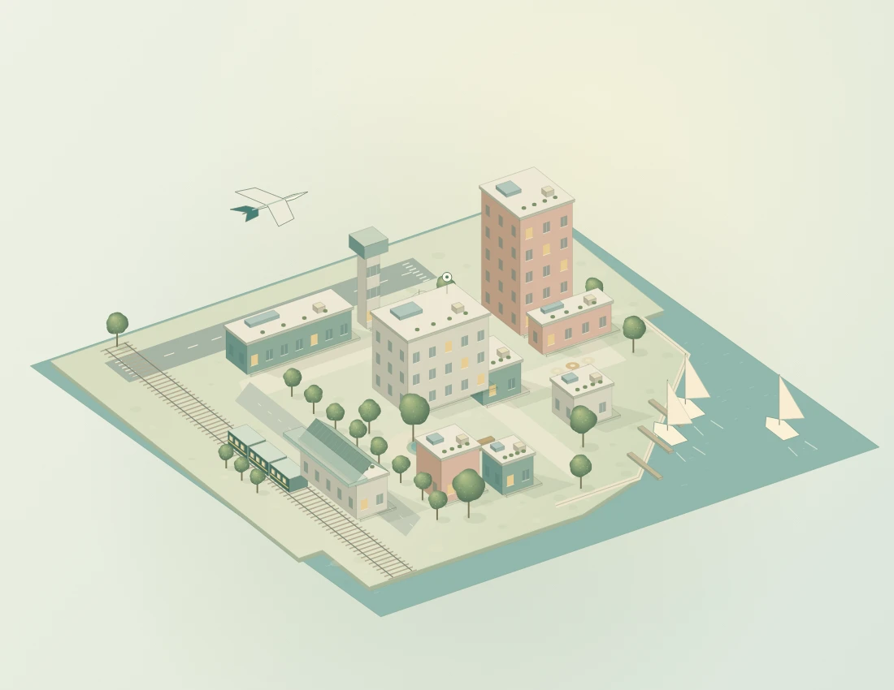
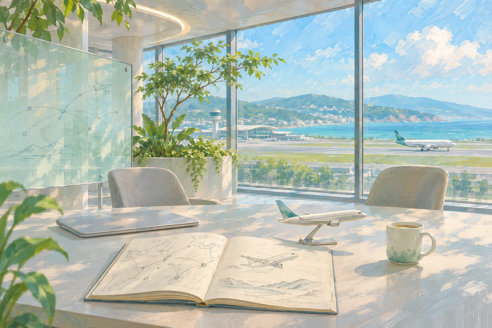

An AI Lab for the world of Travel
For the world
of travel.
Solving the hardest problems in travel
with frontier AI.
Our reason for being
Frontier AI.
Closer to everyone.
Democratizing frontier AI R&D
to accelerate travel.
Travel is a demanding place for AI. Information changes. Plans fall apart. Someone still needs to get home.
We turn those hard problems into research, tools and experiences people can use.
Take a closer look
Inside TravelLabs.

Where difficult questions become useful tools. Meet ATFGraph and Keel, our beta frameworks for AI that can act.
Meet our frameworks. Explore Leisure AI and frontier models for travel.
Explore the research ↗
We bring research and engineering together to solve difficult travel problems.
Meet the lab ↗Read deeply. Do the work that needs doing. Learn through intelligent failures.
Read our principles ↗We’re hiring. Help shape what travel becomes next.
Explore careers ↗Papers
Ideas, made inspectable.
The thinking, evidence and open questions behind our work.
Planned submissions to NeurIPS and ICML.
Explore all papers ↗There’s more to discover
The next journey starts
with a question.
Bring a hard travel problem.
Let’s make something useful.